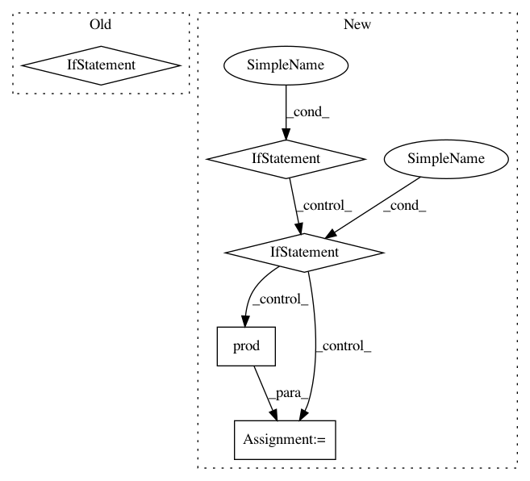

1d2bee04f27bb519fb6e9561b2808b4e9ec86def,Orange/statistics/util.py,,bincount,#Any#Any#Any#Any#,23
Before Change
nans = 0. if X.ndim == 1 else np.zeros(X.shape[1], dtype=float)
if minlength is None and max_val is not None:
minlength = max_val + 1
bc = np.array([]) if minlength is not None and minlength <= 0 else \
np.bincount(X.astype(np.int32, copy=False),
weights=weights, minlength=minlength).astype(float)
return bc, nans
def countnans(X, weights=None, axis=None, dtype=None, keepdims=False):
After Change
if minlength is None and max_val is not None:
minlength = max_val + 1
if minlength is not None and minlength <= 0:
bc = np.array([])
else:
bc = np.bincount(
X.astype(np.int32, copy=False), weights=weights, minlength=minlength
).astype(float)
// Since `csr_matrix.values` only contain non-zero values, we must count
// those separately and set the appropriate bin
if sp.issparse(X_):
bc[0] = np.prod(X_.shape) - X_.nnz
return bc, nans
def countnans(X, weights=None, axis=None, dtype=None, keepdims=False):
In pattern: SUPERPATTERN
Frequency: 3
Non-data size: 5
Instances
Project Name: biolab/orange3
Commit Name: 1d2bee04f27bb519fb6e9561b2808b4e9ec86def
Time: 2017-09-09
Author: pavlin.g.p@gmail.com
File Name: Orange/statistics/util.py
Class Name:
Method Name: bincount
Project Name: NeuromorphicProcessorProject/snn_toolbox
Commit Name: 5c3de2518362675e14b15f87044742a94b816ef2
Time: 2019-08-20
Author: bodo.rueckauer@intel.com
File Name: snntoolbox/simulation/target_simulators/loihi_target_sim.py
Class Name:
Method Name: normalize_loihi_network
Project Name: scipy/scipy
Commit Name: b0f34cdfd3ec8e41521cfd1b4a19c8dabb51fbbf
Time: 2020-02-15
Author: pvanmulbregt@users.noreply.github.com
File Name: scipy/stats/_ksstats.py
Class Name:
Method Name: _kolmogn